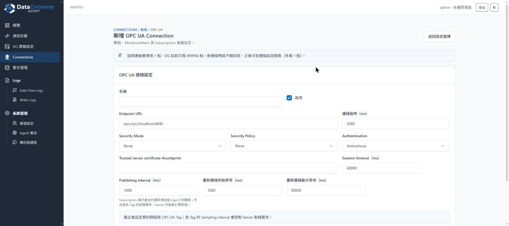

OPC UA 連線與 Tag
OPC UA 連線以 Subscription 接收設備變化。Publishing interval 屬於連線，Sampling interval 屬於每一個 Tag。
建立 OPC UA 連線

- 名稱／啟用
- 連線名稱，會成為 DG Tag 名稱的一部分。
- Endpoint URL
- 例如 opc.tcp://<設備位址>:4840。
- Security Mode／Security Policy
- None、Sign、SignAndEncrypt；Policy 依設備支援選擇。
- Authentication
- Anonymous、Username 或 Certificate。
- Trusted server certificate thumbprint
- 信任的設備憑證指紋（使用安全連線時）。
- Publishing interval（ms）
- Subscription 把通知送給 Agent 的週期，不改變各 Tag 的取樣頻率。
- 填名稱與 Endpoint URL。
- 依設備要求設定安全性與登入方式；其他欄位可用預設值。
- 按「建立 OPC UA Connection」。
進入新連線的設定頁，分頁有「連線設定」「資料讀取」「Tag 設定」「寫入安全規則（Write Policies）」。
失敗時先查
- 之後連不上：在連線設定頁按「儲存並測試連線」，看測試結果；可用「Discover endpoints / certificates」查看設備提供的端點與憑證。
修改連線設定與測試

- 修改「連線基礎」「授權／安全性」「取樣頻率」中的欄位。
- 按「儲存連線設定」，或按「儲存並測試連線」同時測試。
測試結果顯示連線成功；右上狀態標籤更新。
Sampling interval 是每個 Tag 的設定，不能在連線頁用單一數值覆蓋，請到「Tag 設定」逐筆或批次調整。
失敗時先查
- 測試失敗：確認 Endpoint、安全性與帳密設定與設備一致，且 Agent 能連到設備的連接埠。
建立資料群組

- 在「群組名稱」輸入名稱（例如「反應區製程」），勾選「啟用」。
- 按「新增」。
群組出現在清單中，之後建立 Tag 時可指定群組。
資料群組不會修改 Tag 的 Sampling interval，也不會修改連線的 Publishing interval。
失敗時先查
- 群組名稱重複會被拒絕。
從節點樹選取 Tag

- 按「重新載入樹」取得 OPC UA Objects 節點；也可輸入至少 2 個字搜尋名稱或 NodeId。
- 在左側勾選節點：「節點」可展開，勾「全選」會選取分支下所有值；「值」可直接選為 Tag。
- 按「加入左側勾選 >」，右側「已選擇節點」列出要建立的 Tag。
- 不要的節點在右側勾選「移除」或按「全選（移除）」再移除。
- 按「下一步：確認並設定 N 個 Tag」。
進入步驟 2 確認 Tag 異動。
失敗時先查
- 樹是空的：設備未連線，先在「連線設定」測試連線。
確認 Tag 異動與批次命名
- 檢查清單中的新增、修改與刪除。同名節點會自動加亂碼避免衝突。
- 批次命名：在搜尋框篩選（例如 R-101.），按「全選篩選結果」，輸入 TagName 前綴（例如 R101_），按「套用至選取」。
- 需要時用「尋找／取代為」逐一去除不要的文字。
- 按「儲存 Tag 異動」。
顯示「Tag 維護完成：更新 0 個、新增 N 個、刪除 0 個」；DG「Tag 管理」出現對應的 Tag。
Agent 新增的點會自動成為 DG Tag，名稱為「Agent.連線.點」。之後在 DG 改名不影響歷史。
失敗時先查
- DG 沒有出現新 Tag：確認 Agent 為 Online，再到 DG「Tag 管理」按「重新整理」。
手動／進階設定 Tag
- 切到「手動／進階」。
- 新增時直接輸入 NodeId 與名稱等欄位；修改時在 Tag 列按「編輯」。
- 可調整 Sampling interval、保存間隔、是否保存重複值，以及 Access Mode（ReadOnly／ReadWrite）。
- 按「儲存 OPC UA Tag」。
Tag 清單更新；改成 ReadWrite 時需同時指定 Write Policy（第 7 章）。
失敗時先查
- 儲存時提示「可寫 Tag 必須指定同一 Connection 中已啟用的 Write Policy」：先建立寫入安全規則。